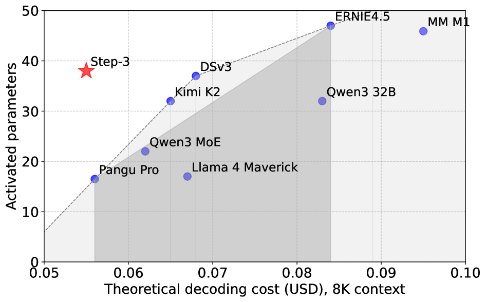
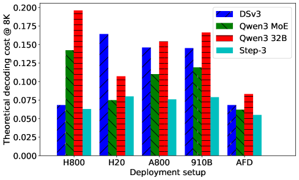
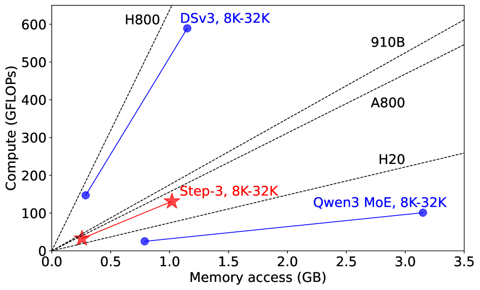
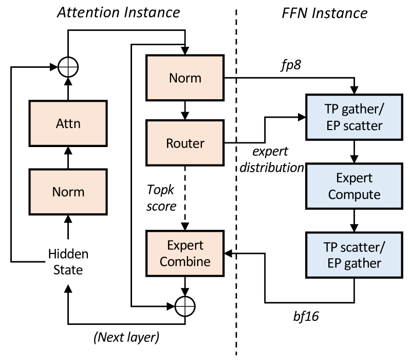
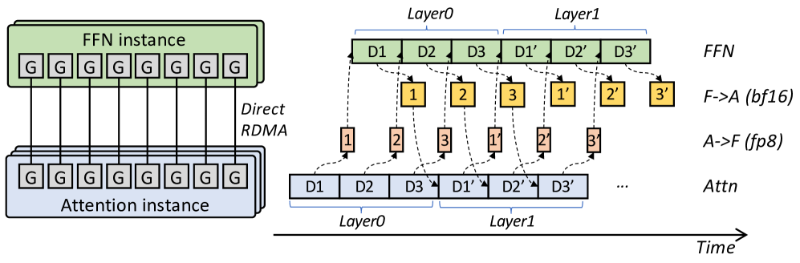
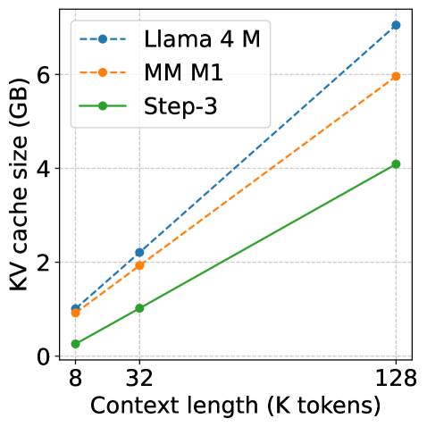
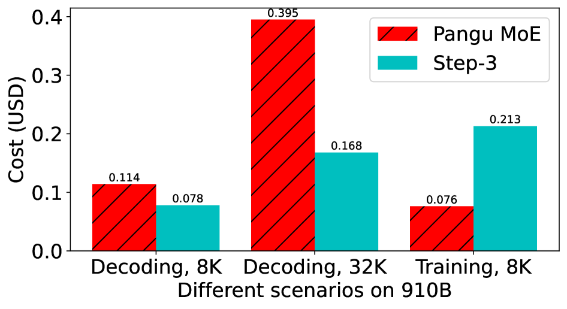
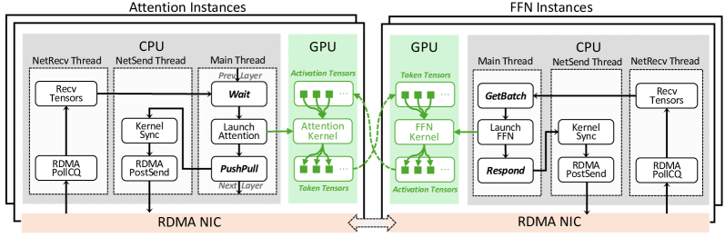

用「模型-系统协同设计」证明：解码成本不取决于参数量，而取决于注意力的算术强度是否匹配硬件、MoE 稀疏度是否合理、以及能否把注意力与 FFN 拆开各跑各的。
推理模型越想越聪明，但「想得越长」=「解码越贵」。Step-3 是一个 321B 总参、每 token 激活 38B 的大模型（激活量比 DSv3、Qwen3-235B 都大），却把解码成本做到了同级最低。它的秘密不是「参数更少」，而是两个协同设计：
① MFA（多矩阵分解注意力）：同时压低 KV cache 和 计算量，把注意力的「算术强度」调到约 128，正好卡在便宜硬件（A800/910B）的甜区，而不像 MLA（512）那样只能榨干最贵的 H800。② AFD（注意力-FFN 分离）：把注意力层和 FFN 层部署到两组不同的 GPU 上，各自用最合适的并行策略与硬件、各自跑满利用率，再用流水线把通信藏起来。
结果：在 H800、4K 上下文、50ms TPOT、FP8、无 MTP 的「对 DSv3 最有利」场景下，Step-3 跑出 4,039 tokens/GPU/s，比 DSv3 的 2,324 高约 74%；上下文越长、硬件越便宜，优势越大。

低秩分解 QK + 多查询头共享单组 KV，KV cache 与计算量双低，算术强度匹配便宜硬件。
注意力与 FFN 拆到不同 GPU 各自优化，流水线藏通信，32 卡即可部署一个解码实例。
把解码成本拆成「注意力 + FFN」，用算术强度 vs 硬件 roofline 解释一切，给出美元定价。
问题定义
训练贵、prefill（读入提示词）贵，但作者认为 解码（一个一个吐 token）才是单 token 最贵的环节，原因有四：
作者观察当下的开源大模型，指出了两个被普遍误用的「想当然」做法——它们正是 Step-3 想纠正的对象：
很多新注意力设计（如 MLA）一味追求「KV cache 越小越好」，代价是每读一字节 KV 要做的计算量（算术强度）非常高。这让模型只有在算力极强的硬件（H800）上才划算，换到更便宜但算力弱的卡上就严重计算受限；同时也几乎没有空间再叠加 KV 量化、MTP 等加速手段。
有些模型把 MoE 做得极度稀疏（如 8/256），纸面上激活参数很小。但 稀疏度必须和硬件的算力、显存带宽、网络带宽一起考虑：太稀疏意味着要凑非常大的 batch 才能让 FFN 跑到高 MFU，否则要么硬件效率被拖垮，要么白白损失模型性能却换不到成本优势。
核心洞察 · 重头戏之一
有了 AFD（下一节细讲），就可以把模型成本干净地拆成三块独立分析：注意力核心计算 / 注意力前后的线性投影 / FFN 计算。在「每块都能跑到硬件极限」的假设下，作者给出每 token 的理论 FLOPs、显存访问量，再乘以各硬件的「每 FLOP 单价」和「每字节访问单价」，就得到了真实可比的美元成本。
FFN 的成本与上下文长度无关，而注意力成本随上下文线性增长。所以注意力的设计远比激活参数量更影响成本——这正是「参数量不是好指标」的根因。优化解码，第一刀就该砍注意力。
8K 上下文下，Step-3 最便宜，约 0.055 美元 / 1M token（AFD + H800/H20），低于 DSv3 的 0.068（EP + H800）和 Qwen3 MoE 的 0.062。到 32K 上下文优势更大：Step-3 仅 0.129，而 DSv3 高达 0.211、Qwen3 MoE 0.193。
Qwen3 32B 的总参数远少于 DSv3 和 Step-3，激活参数也略少，但它的解码成本在对比中最高。这直接戳破「参数少 = 便宜」的迷思。
DSv3 的 MLA 在 H800 之外的硬件上成本成倍上升；Qwen3 的 GQA 因 KV 太大，在 H20 之外的硬件上也很贵。而 Step-3 的 MFA 在各种硬件上成本差异都很小，这给了它「用便宜卡也划算」的自由度。

AFD 是「注意力和 FFN 各选最便宜的硬件再相加」。把最优部署下的成本提炼成下表，最直观：
| 模型 | 激活参数 | 解码成本 @8K (USD/1M tok) | 解码成本 @32K (USD/1M tok) |
|---|---|---|---|
| Step-3 (本文) | 38B | 0.055 | 0.129 |
| DSv3 (MLA) | 37B | 0.068 | 0.211 |
| Qwen3 MoE 235B (GQA) | 22B | 0.062 | 0.193 |
本文方法 · 重头戏之二
先解一个谜：从纯数字看，Step-3 的 MFA 相比 DSv3 的 MLA，KV 访问量只少了约 10%（见下表）；可在最终美元成本里，注意力却便宜了一半还多。差距从哪来？答案是一个常被忽略的量——算术强度（arithmetic intensity）。
算术强度 = 每从显存读取 1 字节 KV，需要配套做多少次浮点运算。它由注意力设计本身决定，和 batch、上下文长度都无关。 —— 论文 §5.1
每块硬件也有一个固定的「算力 / 带宽」比值，叫 roofline。只有当注意力的算术强度匹配硬件的 roofline 时，才能两头都用满；否则不是计算卡脖子（compute-bound），就是带宽卡脖子（memory-bound）。
对照各硬件 roofline：H800 ≈ 591、A800 ≈ 156、910B ≈ 175、H20 ≈ 74。可以看到：

MFA 的设计思路：用「很多个、维度也很大的查询头」保住表达力，同时让它们共享同一组极小的 KV，并用低秩分解压住查询投影的计算量。在 Step-3 中的具体配置：
256+256 = 512 字节（8-bit），极小。64 × 256 = 16,384 → 用很少的参数撑起 64 个大查询头，有效秩 16,384，与 MLA 持平、是 Qwen3 的两倍。MFA 的更完整推导见原文引用的 Multi-Matrix Factorization Attention（Hu et al., 2025）。
本文方法 · 重头戏之三
注意力层和 FFN 层的「性格」完全不同：注意力参数少、但要存巨大的 KV cache，是显存密集型；FFN（尤其 MoE）参数巨大、但不存中间结果，是计算密集型。传统系统把它们当成一个整体部署，必然有一方被另一方拖累，GPU 利用率上不去。
AFD 的做法：把注意力层和 FFN 层部署到两组独立的 GPU 上，各自选最合适的并行策略和硬件、各自跑到高 MFU；解码时逐层把隐藏状态通过高速网络在两组之间来回传递，形成一条注意力↔FFN 互为上下游的紧耦合流水线。

Norm → Attn、KV cache 管理，以及 MoE 里的非专家部分——包括 Router（路由）和 Expert Combine（把各专家结果加权合并）。每个 GPU 用本地 DP 处理一批独立数据。TP gather/EP scatter → Expert Compute → TP scatter/EP gather。拆开之后最大的风险是网络通信时间：在这种细粒度场景下，每层传输延迟和注意力、FFN 的计算时间是同一量级的。如果串行等待，通信就成了纯开销。AFD 的解法是把「注意力计算 / 通信 / FFN 计算」编排成一条三阶段流水线（每阶段 16.6ms，合计 50ms TPOT），让三种资源始终并行满载，通信被计算完全盖住。
把一个大 batch 切成 3 个微批 D1/D2/D3 喂进流水线。点「下一步」看它们如何在「注意力 → A→F 通信 → FFN → F→A 通信」四条通道间错位流动。' 表示进入下一层。

Attn 注意力计算 → A→F (fp8) 上行通信 → FFN 专家计算 → F→A (bf16) 下行通信。横轴是时间。' 的 D1'/D2'/D3'）：本层尾部和下一层头部无缝衔接，流水不停顿。作者把 AFD 与两类代表性方案做了对比（点开看每种方案的做法与短板）：
它怎么做：DSv3 用大规模 EP 把专家权重摊到很多卡上来放大 batch、提高 FFN 效率，一个解码实例需要约 320 张 GPU。
卡在哪（vs AFD）：
注：AFD 不是要取代 EP，而是互补——Step-3 内部 FFN 仍可用 TP+EP 混合。对比针对的是「不用 AFD 的纯 EP」。
它怎么做：Megascale-Infer 是已知最早构建「注意力-FFN 分离」服务系统的工作。
卡在哪（vs AFD）：
本文方法 · 第三块拼图
FFN 的成本主要看「能不能凑够 batch 跑到高 MFU」。MoE 越稀疏，需要凑的理想 batch 就越大（B_MoE = B_dense / S，S 是稀疏度）。但 batch 大了，FFN 与外界来回传的隐藏状态也变多——在 50ms / 三阶段 / 每层 16.6ms÷61≈272μs 的预算下，网络带宽会先撑不住。把这条约束反解，就得到「硬件能接受的最稀疏配置」：
S ≥ (H × FLOPs × L) / (Net × Bandwidth × 11.1ms)
代入 Step-3 的 H=7168, L=61（与 DSv3 相同）和各硬件参数，得到每种硬件的最小可行稀疏度：
| 硬件 | H800 | H20 | A800 | 910B |
|---|---|---|---|---|
| 最小稀疏度 S | 0.058 | 0.007 | 0.031 | 0.034 |
关键结论：H800 单位算力最便宜，但最不能容忍过稀疏的 MoE（要求 S ≥ 0.058）。所以 Step-3 刻意把稀疏度控制在约 0.08（含共享专家），保证能用上便宜的 H800。
Step-3 的设计从根上避开了过稀疏问题，可以用小 TP / EP / TP+EP 混合，无需任何路由限制，专家不均的影响也最小。
有意思的点
像 MiniMax M1（70 层线性 + 10 层全注意力）、Llama 4 Maverick 这类「混合模型」，靠把大多数层换成线性注意力来省 KV。但作者指出两个反直觉的麻烦：

Pangu Pro MoE 号称为华为 910B 优化，但作者发现它在 910B 上的解码成本远高于 Step-3（尽管它只激活 16.5B，不到 Step-3 一半）。原因是它的优化目标其实是训练：训练成本主要由激活参数决定，所以它训练确实比 Step-3 便宜 50%+。

「低比特存储 + 高比特计算」的量化（如 KV 存 4-bit、算 8-bit）会把算术强度翻倍；MTP（多 token 预测）效果类似。这对不同模型意味着完全不同的命运：
⚠️ 但 MTP 是把双刃剑：在 AFD 下 FFN 本就高 MFU，开启 MTP 会无条件增加 FFN 计算量，而 MTP 预测又不是 100% 命中——是否开启需要非常谨慎权衡。
因为 AFD 能独立扩缩注意力和 FFN，所以可以用便宜卡分别承接。例如 Step-3 的注意力在 H800 上是带宽受限的，4 张 L20（带宽约为 H800 的 25%+）就能以 DP 方式顶上一张 H800；FFN 部分用约 48 张 L20（6 台服务器）即可，仍远少于 DSv3 的部署规模。作者建议：百亿~千亿级模型，至少用 L20 这一档的卡（更弱的 L4 光读线性层就把 272μs 预算耗光，不可行）。
实现与结果
在「对 DSv3 最有利」的场景（H800、4K 平均上下文、20 tokens/s 解码 SLA、FP8、无 MTP）下直接对比：
4K 场景用 2A2F（2 注意力实例 + 2 FFN 实例 = 32 卡），总 batch 6144 拆成 3 个 2048 微批填满三阶段流水线。换更长上下文只需加注意力实例（如 8K 用 4A2F），SLA 与总吞吐保持。注意：这恰恰是 Step-3 优势最小的场景，上下文越长、硬件越便宜，差距越大。
只测注意力层（含前后线性投影）的延迟，最能说明三种设计的硬件友好度差异：
| 上下文 | 注意力类型 | H800 (μs) | H20 (μs) | A800 (μs) |
|---|---|---|---|---|
| 8K | MFA-Step3 | 281 | 438 | 531 |
| MLA-DSv3 | 372 | 1252 | — | |
| GQA-Qwen3 | 382 | 812 | 791 | |
| 32K | MFA-Step3 | 791 | 1452 | 1484 |
| MLA-DSv3 | 1125 | 4817 | — | |
| GQA-Qwen3 | 1391 | 3042 | 3010 |
三阶段流水线要求在每层 272μs 内完成 FP8 token、缩放因子、专家分布、BF16 激活的全部传输。NCCL / DeepEP 等现有库要么延迟不稳，要么额外占用 GPU SM 拖慢计算。StepMesh 基于 GPUDirect RDMA，做到：

StepMesh 已开源：github.com/stepfun-ai/StepMesh ↗
结论
Step-3 用 MFA + AFD 的模型-系统协同设计，证明了「大模型」与「便宜解码」可以兼得：关键不在参数多少，而在让注意力的算术强度匹配硬件 roofline、让 MoE 稀疏度匹配硬件带宽、并把注意力与 FFN 物理拆开各自跑满。在对自己最不利的场景里，它依然把解码吞吐做到了 DSv3 的约 1.74 倍，并改写了「激活参数 × 解码成本」的 Pareto 前沿。
作者的下一步：启用 MTP 并评估解码收益；探索新的注意力变体继续推进 Pareto 前沿；与硬件厂商合作设计更高带宽的互联域，从而追求更稀疏的 FFN。 —— 论文 §8 Conclusion and Future Work